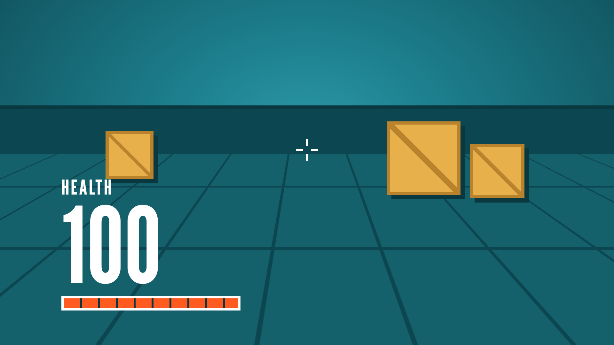
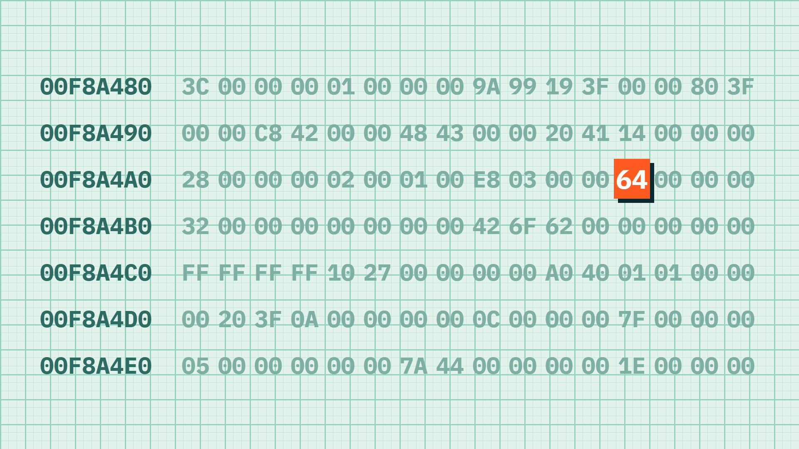
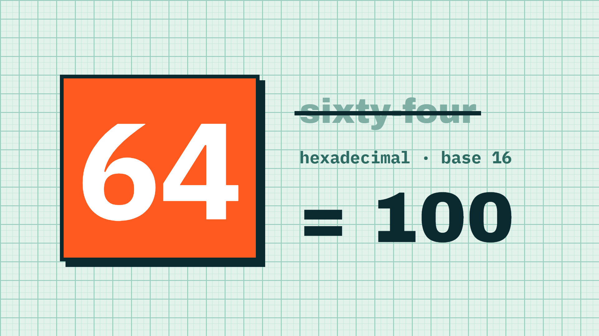
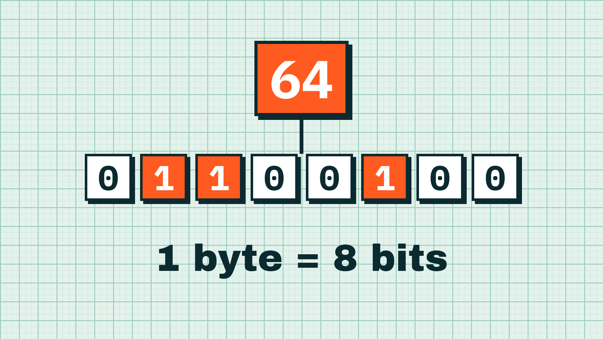
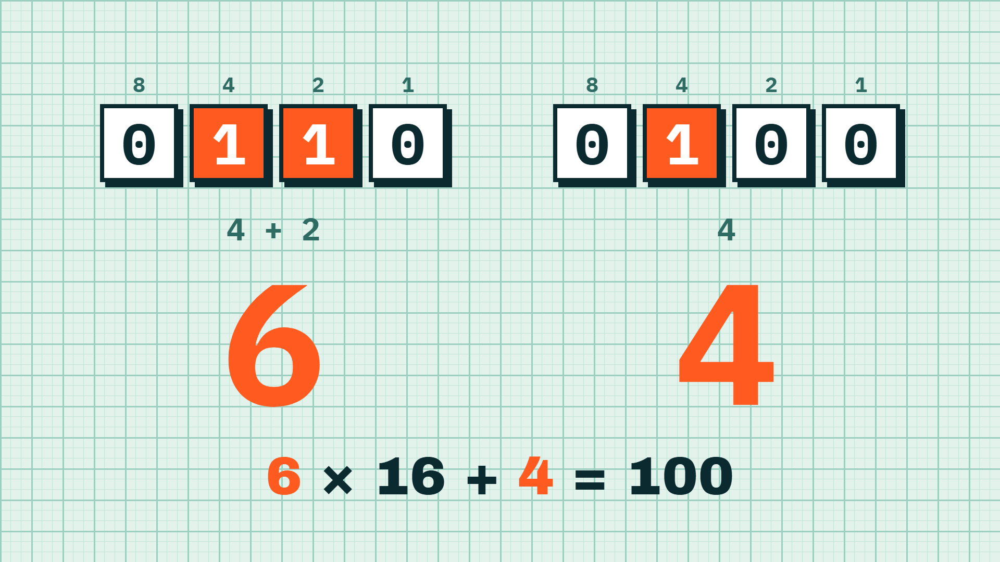
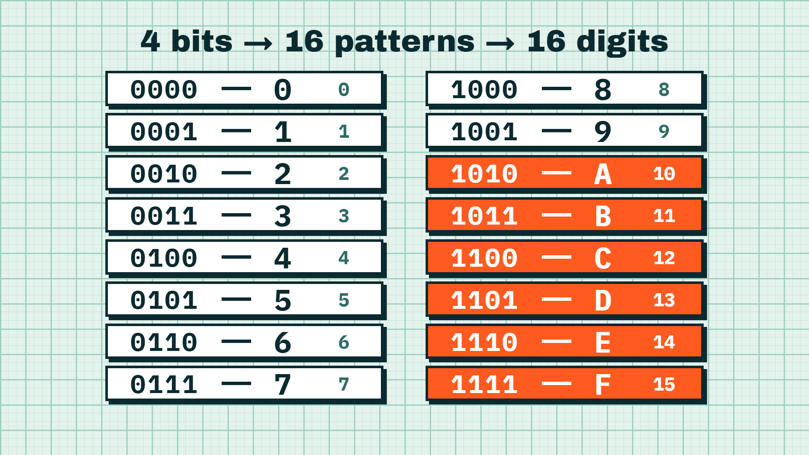
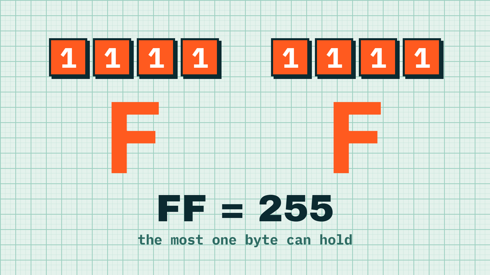
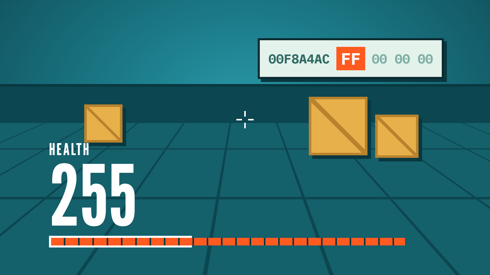
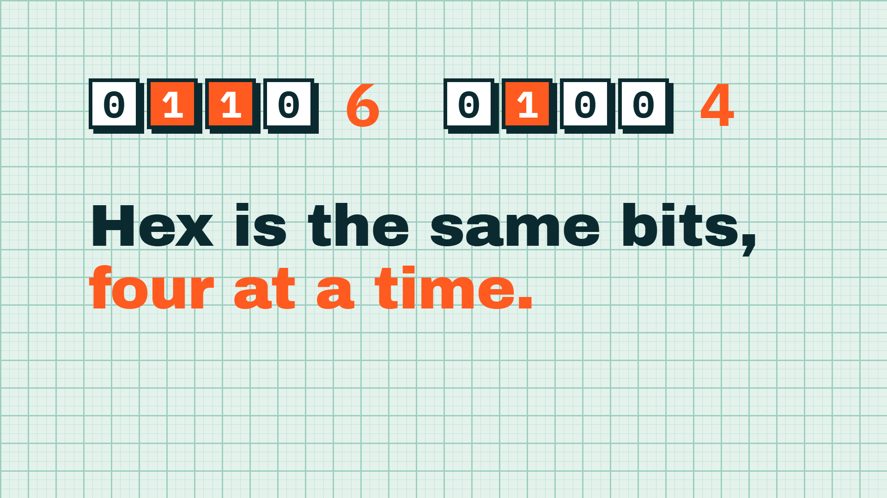

Storyline A, "The Health Bar". 9 shots, 71.5 s, 1920×1080. Each still is the shot at its key moment; motion and sound come after approval.

A game HUD reads HEALTH 100; the camera starts pushing into the number
"Your health says one hundred. But the game never wrote down a one and two zeros. So what did it store?"

Rows of address plus sixteen byte pairs; everything dims except one orange 64
"Dive into the game's memory and you find rows of this: pairs of digits and letters. One pair is your health."

The 64 tile fills the left half; "sixty-four" is struck through; "= 100" prints
"This one. Six-four. Not sixty-four: this is hexadecimal, base sixteen, and it means exactly one hundred."

The 64 tile opens into eight bit cells reading 0 1 1 0 0 1 0 0
"Underneath, it is one byte: eight bits, each a zero or a one. That is all the machine really has."

Each group of four gets place values 8 4 2 1 and adds up to one hex digit: 6 and 4
"Now split the eight bits into two groups of four. The first group is worth six. The second is worth four."

A table grows row by row from 0000 to 1111; rows A to F are orange
"Four bits can make sixteen patterns, so you need sixteen digits. Zero to nine, then A through F for ten to fifteen."

Every cell flips to 1; both digits become F; FF = 255
"Fill every bit with a one and both digits become F. F-F is two hundred fifty-five, the most one byte can hold."

The byte at 00F8A4AC now holds FF; the HUD reads 255 and the bar overruns its frame
"So write F-F into that byte, climb back out, and your health reads two hundred fifty-five."

0110 gives 6 and 0100 gives 4 above the line "Hex is the same bits, four at a time."
"Hex is not a different number. It is the same bits, four at a time."